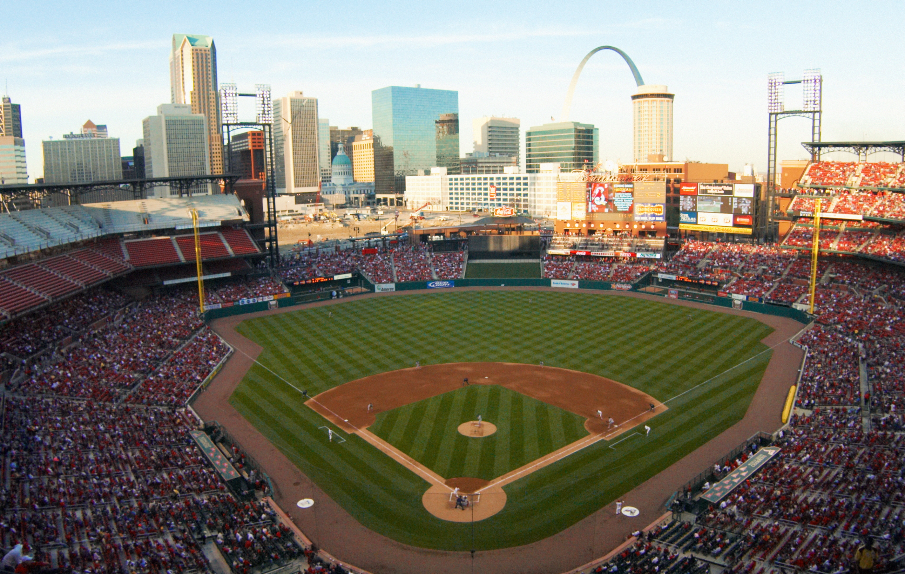

To the right Busch Stadium located in Saint Louis Missouri. Bellow are some facts about the city.
- City population
- Urban: 2,156,323
- Metro: 2,809,299
- Year incorporated
- Region the city is located in
- Classification of city
- Average income level of the city compared to state
- City: $29,156 (2000)
- State: $53,578